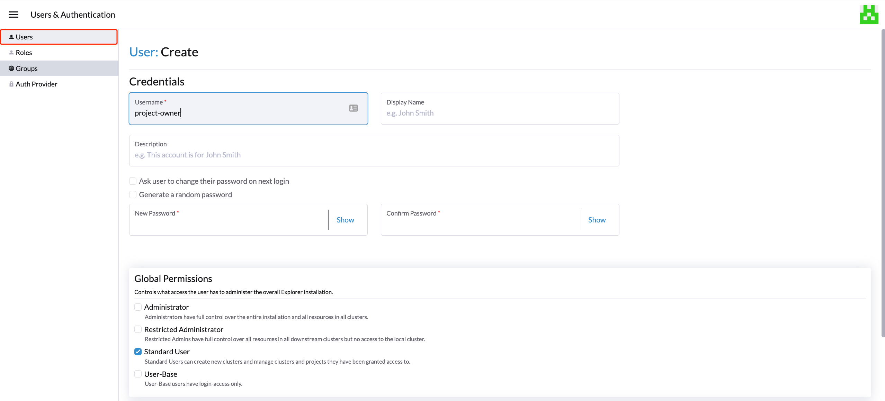

|
Este documento ha sido traducido utilizando tecnología de traducción automática. Si bien nos esforzamos por proporcionar traducciones precisas, no ofrecemos garantías sobre la integridad, precisión o confiabilidad del contenido traducido. En caso de discrepancia, la versión original en inglés prevalecerá y constituirá el texto autorizado. |
Gestión de la virtualización
Con las capacidades de gestión de virtualización de Rancher, puedes importar y gestionar múltiples clústeres de SUSE Virtualization. Proporciona una solución que unifica la gestión de virtualización y contenedores desde un único panel de control.
Además, SUSE Virtualization aprovecha las capacidades existentes de Rancher, como autenticación y control RBAC para admitir la multitenencia.
Para obtener información sobre cómo desplegar Rancher y aprovisionar clústeres de Kubernetes utilizando varios proveedores de nube, consulta Desplegando SUSE Rancher Prime Servidor.
Importando clúster SUSE Virtualization
-
INTERFAZ DE USUARIO
-
API
-
Verifica y prepara la imagen del contenedor.
Para facilitar la tarea de importación, se creará un nuevo pod llamado
cattle-cluster-agent-*en el clúster SUSE Virtualization. La imagen del contenedor utilizada para este pod depende de la versión de tu servidor Rancher (por ejemplo, se utiliza la imagenrancher/rancher-agent:v2.7.9si estás ejecutando Rancher v2.7.9). Además, esta imagen dinámica no está empaquetada en el ISO SUSE Virtualization y se extrae del repositorio durante la importación.Si tu clúster SUSE Virtualization no es accesible directamente desde internet, realiza una de las siguientes acciones:
-
Configura un registro privado para el clúster y añade la imagen. Harvester extraerá automáticamente la imagen de este registro.
-
Si configuraste un proxy HTTP para acceder a servicios externos, verifica que esté funcionando como se espera. Los servidores DNS que especificaste en la configuración de Harvester deberían poder resolver el nombre de dominio
docker.io. -
Descarga la imagen utilizando el comando
docker pull rancher/rancher-agent:v2.7.9 && docker save -o rancher-agent.tar rancher/rancher-agent:v2.7.9. A continuación, crea una copia de la imagen descargada en cada nodo del clúster y luego importa la imagen a containerd utilizando el comandosudo -i ctr --namespace k8s.io image import rancher-agent.tar. Finalmente, ejecutasudo -i crictl image ls | grep "rancher-agent"en cada nodo para asegurarte de que la imagen esté lista.
-
-
Una vez que el servidor Rancher esté en funcionamiento, inicia sesión y haz clic en el menú hamburguesa y elige la pestaña Gestión de Virtualización. Selecciona Importar Existente para importar el clúster SUSE Virtualization en sentido descendente en el servidor Rancher.

-
Especifica el
Cluster Namey haz clic en Crear. A continuación, verás la guía de registro; por favor, abre el panel de control del SUSE Virtualization clúster de destino y sigue la guía en consecuencia.
-
Una vez que el nodo agente esté listo, deberías poder ver y acceder al clúster importado SUSE Virtualization desde el servidor Rancher y gestionar tus VMs en consecuencia.

Siempre que el nodo agente se quede atascado, ejecuta el comando
kubectl get pod cattle-cluster-agent-* -n cattle-system -oyamlen el clúster SUSE Virtualization. Si se muestra el siguiente mensaje, verifica la información en el paso 1, mata este pod y luego se creará automáticamente un nuevo pod para reiniciar el proceso de importación.... state: waiting: message: Back-off pulling image "rancher/rancher-agent:v2.7.9" reason: ImagePullBackOff ... -
Desde la interfaz de usuario SUSE Virtualization, puedes hacer clic en el menú hamburguesa para navegar de vuelta a la página de gestión de múltiples clústeres Rancher.

-
En el clúster de Kubernetes Rancher, crea un nuevo recurso
Cluster.Ejemplo:
apiVersion: provisioning.cattle.io/v1 kind: Cluster metadata: name: harvester-cluster-name namespace: fleet-default labels: provider.cattle.io: harvester annotations: field.cattle.io/description: Human readable cluster description spec: agentEnvVars: [] -
Una vez que se actualice el estado del recurso
Cluster, obtén el ID del clúster (formato:c-m-foobar) de la propiedad.status.clusterName. -
Crea un
ClusterRegistrationTokenutilizando el ID del clúster en el espacio de nombres con el mismo nombre que el ID del clúster. Debes especificar el ID del clúster en el campo.spec.clusterNamedel token.Ejemplo:
apiVersion: management.cattle.io/v3 kind: ClusterRegistrationToken metadata: name: default-token namespace: c-m-foobar spec: clusterName: c-m-foobar -
Una vez que se actualice el estado del
ClusterRegistrationToken, obtén el valor de la propiedad.status.manifestUrldel token. -
En el clúster SUSE Virtualization, aplica un parche a la configuración
cluster-registration-urly especifica la URL obtenida de la propiedad.status.manifestUrldel token de registro del clúster en el campovalue.Ejemplo:
apiVersion: harvesterhci.io/v1beta1 kind: Setting metadata: name: cluster-registration-url value: https://rancher.example.com/v3/import/abcdefghijkl1234567890-c-m-foobar.yaml
Actualizaciones
Para actualizar un clúster SUSE Virtualization importado, debes actualizar Rancher, la Extensión de UI de Harvester, y SUSE Virtualization en un orden específico. La Extensión de UI de Harvester es necesaria para acceder a la interfaz de usuario SUSE Virtualization en Rancher v2.10.x y versiones posteriores.
-
Consulta la matriz de soporte para determinar las versiones de Rancher y la Extensión de UI de Harvester que coinciden con el clúster SUSE Virtualization.
-
Actualiza Rancher.
-
Actualiza la Extensión de UI de Harvester.
Para obtener información sobre cómo actualizar la extensión en un entorno aislado, consulta Extensión de UI de Harvester con Rancher Integración.
-
Actualiza SUSE Virtualization.
Las características en SUSE Virtualization v1.5.0 y versiones posteriores se implementan en la Extensión de UI de Harvester. Si no actualizas Rancher y la Extensión de UI de Harvester, estas características pueden no estar disponibles.
Multitenencia
SUSE Virtualization aprovecha la Rancher existente autorización RBAC de manera que los usuarios pueden ver y gestionar un conjunto de recursos basados en sus permisos de rol de clúster y proyecto.
Dentro de Rancher, cada persona se autentica como un usuario, que es un inicio de sesión que otorga acceso a Rancher. Como se menciona en Autenticación, los usuarios pueden ser locales o externos.
Una vez que el usuario inicia sesión en Rancher, su autorización, también conocida como derechos de acceso, se determina por permisos globales y roles de clúster y proyecto.
-
Permisos globales: Definir la autorización del usuario fuera del ámbito de cualquier clúster particular.
-
Roles de clúster y proyecto: Define la autorización del usuario dentro del clúster o proyecto específico donde se asigna a los usuarios el rol.
Tanto los permisos globales como los roles de clúster y proyecto se implementan sobre Kubernetes RBAC. Por lo tanto, la aplicación de permisos y roles es realizada por Kubernetes.
-
Un propietario de clúster tiene control total sobre el clúster y todos los recursos dentro de él, por ejemplo, hosts, VMs, volúmenes, imágenes, redes, copias de seguridad y configuraciones.
-
Un usuario de proyecto puede ser asignado a un proyecto específico con permiso para gestionar los recursos dentro del proyecto.
|
Se recomienda encarecidamente gestionar el acceso de los usuarios utilizando las plantillas de rol integradas y RBAC con alcance de proyecto. SUSE Virtualization implementa su propio modelo de RBAC sobre Kubernetes y KubeVirt, integrándose con proyectos al estilo de Rancher y lógica de multitenencia. Durante la actualización de versión o la reconfiguración, el |
Ejemplo de Multitenencia
El siguiente ejemplo proporciona una buena explicación de cómo funciona la funcionalidad de multitenencia:
-
Primero, añade nuevos usuarios a través de la página Rancher
Users & Authentication. Luego, haz clic enCreatepara añadir dos nuevos usuarios separados, comoproject-owneryproject-readonlyrespectivamente.-
Un
project-owneres un usuario con permiso para gestionar una lista de recursos de un proyecto particular, por ejemplo, el proyecto por defecto. -
Un
project-readonlyes un usuario con permiso de solo lectura de un proyecto particular, por ejemplo, el proyecto por defecto.
-
-
Haz clic en uno de los clústeres SUSE Virtualization importados después de navegar a la interfaz de usuario SUSE Virtualization.
-
Haz clic en la pestaña
Projects/Namespaces. -
Selecciona un proyecto como
defaulty haz clic en el menúEdit Configpara asignar a los usuarios a este proyecto con los permisos apropiados. Por ejemplo, al usuarioproject-ownerse le asignará el rol de propietario del proyecto.
-
-
Continúa añadiendo al usuario
project-readonlyal mismo proyecto con permisos de solo lectura y haz clic en Guardar.
-
Abre un navegador en modo incógnito e inicia sesión como
project-owner. -
Después de iniciar sesión como el usuario
project-owner, haz clic en la pestaña Gestión de Virtualización. Allí deberías poder ver el clúster y el proyecto al que se te ha asignado. -
Haz clic en la pestaña Imágenes para ver una lista de imágenes previamente subidas al espacio de nombres
harvester-public. También puedes subir tu propia imagen si es necesario. -
Crea una máquina virtual con una de las imágenes que has subido.
-
Inicia sesión con otro usuario, por ejemplo,
project-readonly, y este usuario solo tendrá el permiso de lectura del proyecto asignado.
|
El espacio de nombres |
Eliminar clúster SUSE Virtualization importado
Los usuarios pueden eliminar el clúster SUSE Virtualization importado desde la pantalla de Gestión de Virtualización de la interfaz de usuario Rancher. Selecciona el clúster que deseas eliminar y haz clic en el botón Eliminar para eliminar el clúster SUSE Virtualization importado.
También necesitarás restablecer la configuración cluster-registration-url en el clúster SUSE Virtualization asociado para limpiar el agente del clúster Rancher.

|
Por favor, no ejecutes el comando |